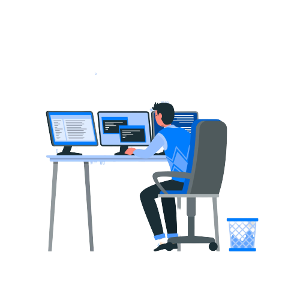

Passei os últimos meses me aprofundando em conteúdo de programação e soft skills, visando uma carreira como desenvolvedor. Sempre fui uma pessoa apaixonada em jogos competitivos e foi daí que saiu uma de minhas conquistas de maior prestígio através de um jogo chamado Tibia, onde peguei um servidor e comecei a fazer as minhas próprias alterações, foi onde eu tive bastante aprendizado de como funcionava na prática a área de back-end, porque foi necessário aprender a fazer algumas mudanças nos scripts em Lua, linguagem C++ além de inúmeras consultas através de comandos do SQL e no JavaScript do site e foi assim que conheci este universo do Full Stack.
